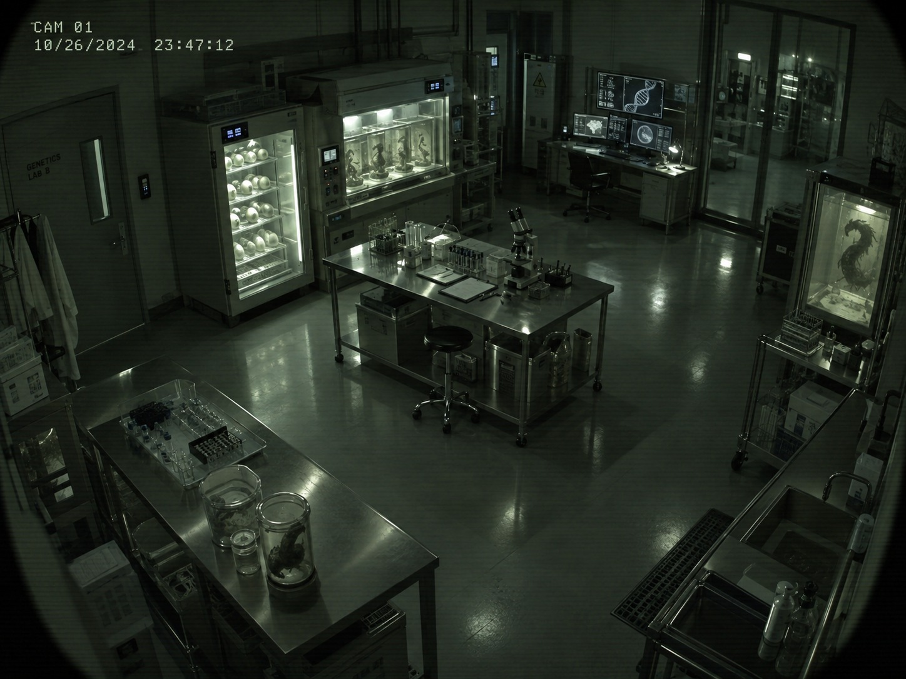
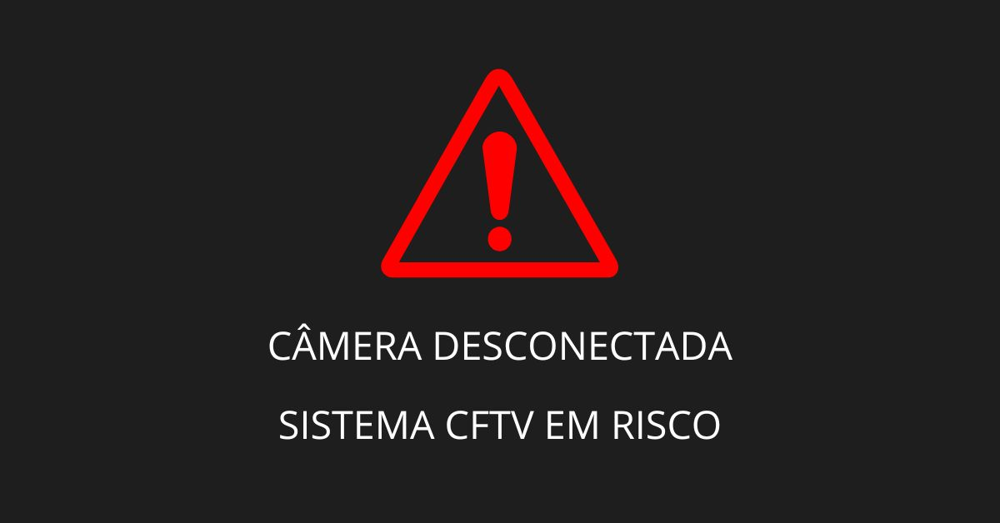
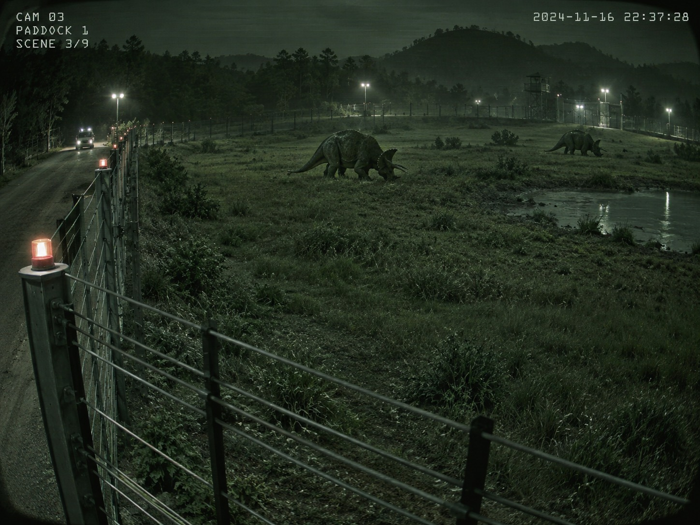
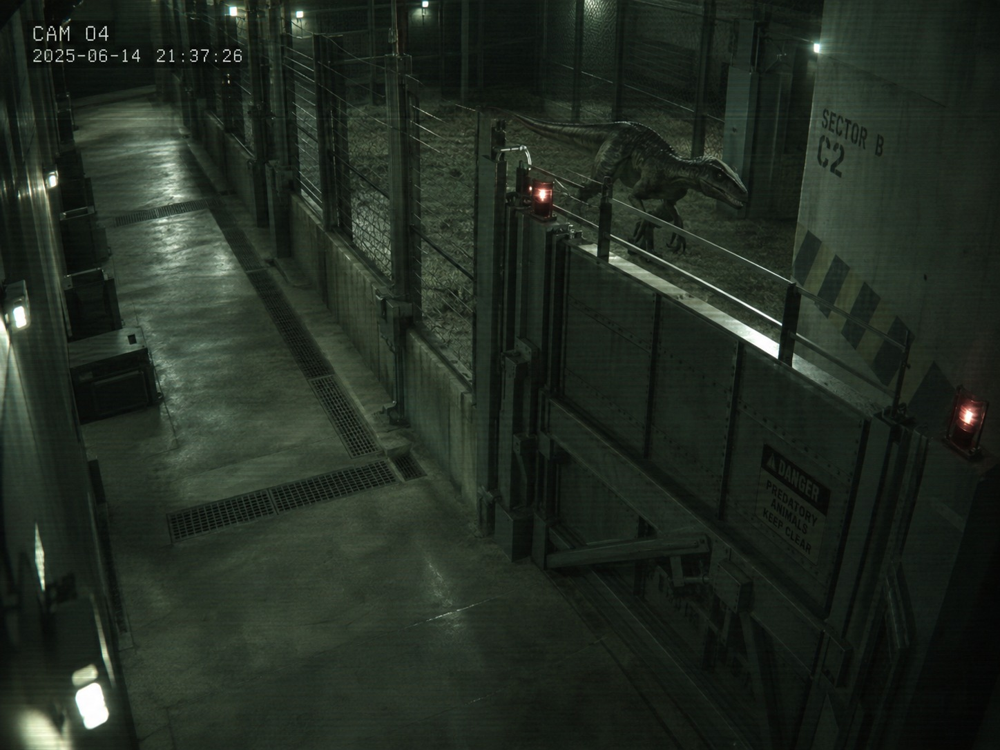
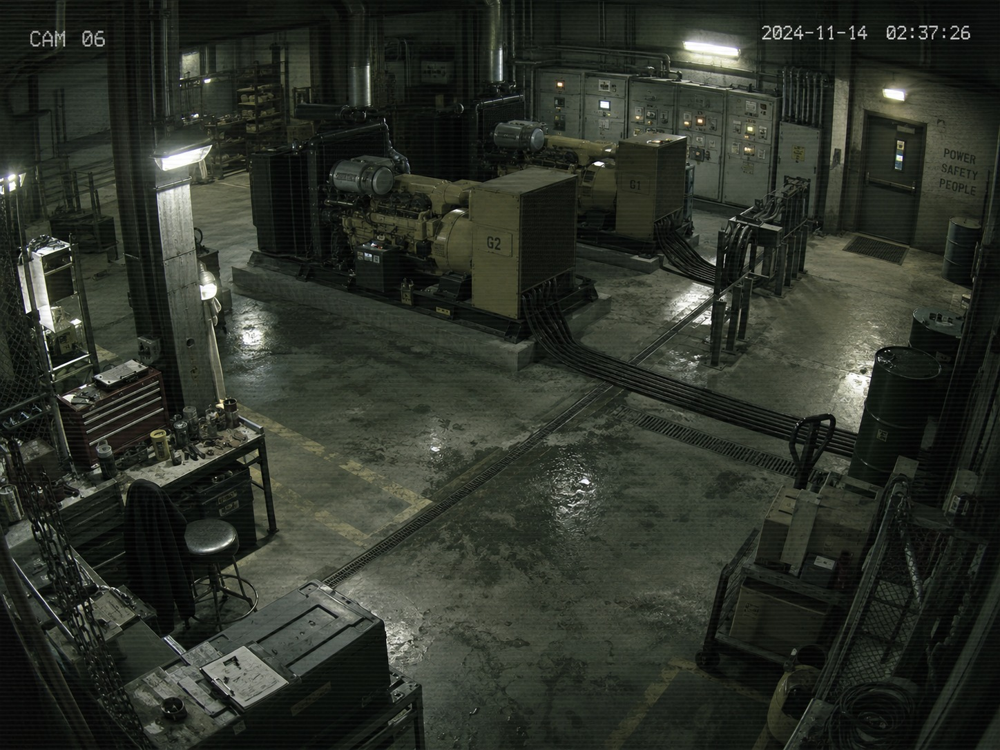
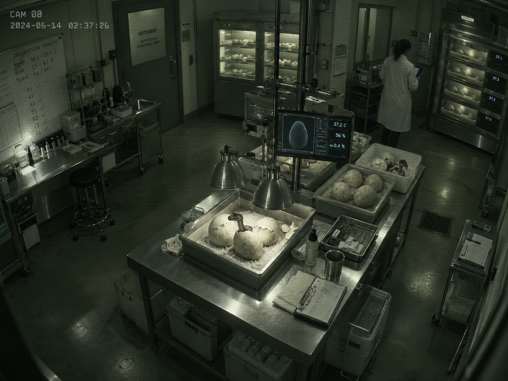
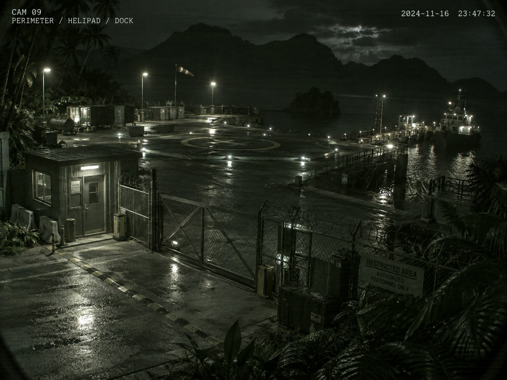

01
•
PROTOCOLOS DE MANEJO
02
•
MONITORAMENTO
CÂMERAS

Câmera 1

Câmera 2

Câmera 3

Câmera 4
Câmera 5

Câmera 6
Câmera 7

Câmera 8

Câmera 9
03
•
ROTINA DO PARQUE
OPERAÇÃO

SETORES // ISLA NUBLAR
● ONLINE
| ID | LOCALIZAÇÃO |
|---|---|
| 01 | Centro de Visitantes |
| 02 | Vale dos Velociraptores |
| 03 | Região dos Carnívoros |
| 04 | Pântano dos Saurópodes |
| 05 | Território dos Tricerátops |
| 06 | Pico dos Pterossauros |
| 07 | Porto Leste |
| 08 | Abrigo dos Saurópodes |
LOCALIZAÇÃO // ISLA NUBLAR
01
Centro de Visitantes
Principal núcleo administrativo e operacional do Jurassic Park. A região reúne importantes instalações usadas pelos funcionários e visitantes do parque.
LOCALIZAÇÃO // ISLA NUBLAR
02
Vale dos Velociraptores
Área do parque destinada aos velociraptores. No romance, esses animais são considerados extremamente inteligentes, agressivos e difíceis de controlar.
LOCALIZAÇÃO // ISLA NUBLAR
03
Região dos Carnívoros
Setor destinado aos grandes dinossauros carnívoros do parque. É uma das regiões que exigem maior segurança e controle.
LOCALIZAÇÃO // ISLA NUBLAR
04
Pântano dos Saurópodes
Região úmida destinada aos grandes saurópodes. Sua vegetação e áreas alagadas compõem um dos ambientes naturais utilizados no parque.
LOCALIZAÇÃO // ISLA NUBLAR
05
Território dos Tricerátops
Área destinada aos tricerátops e planejada para permitir que os visitantes observassem esses grandes herbívoros durante o passeio pelo parque.
LOCALIZAÇÃO // ISLA NUBLAR
06
Pico dos Pterossauros
Região associada aos pterossauros e às instalações destinadas a mantê-los isolados dos visitantes e das demais áreas do parque.
LOCALIZAÇÃO // ISLA NUBLAR
07
Porto Leste
Área de embarque e desembarque da ilha, usada para transporte de suprimentos, equipamentos e funcionários entre Isla Nublar e o continente.
LOCALIZAÇÃO // ISLA NUBLAR
08
Abrigo dos Saurópodes
Pequeno galpão localizado na área dos saurópodes, onde Grant, Tim e Lex descansam por algumas horas antes de seguir rumo ao Centro de Visitantes.